Lecture 2
Compiling
- Last time, we learned to write our first program in C, printing “hello, world” to the screen:
#include <stdio.h> int main(void) { printf("hello, world\n"); } - We compiled it with
make hellofirst, turning our source code into machine code before we could run the compiled program with./hello. makeis actually just a program that callsclang, a compiler named for the “C language”.- We can compile our source code,
hello.c, directly by running the commandclang hello.cin the terminal:$ clang hello.c $ - Nothing seems to happen, which means there were no errors. And if we run list, with
ls, we see ana.outfile in our directory. The filename is just the default forclang’s output, and we can run it:$ ./a.out hello, world - We can add a command-line argument, or an input to a program on the command-line as extra words after the program’s name. We can run
clang -o hello hello.c, whereclangis the name of the program, and-o helloandhello.care additional arguments. We’re tellingclangto usehelloas the output filename, and usehello.cas the source code. Now, we can seehellobeing created as output. - Let’s try to compile the second version of last week’s program, where we ask for a name:
#include <cs50.h> #include <stdio.h> int main(void) { string name = get_string("What's your name? "); printf("hello, %s\n", name); }$ clang hello.c /usr/bin/ld: /tmp/hello-733e0f.o: in function `main': hello.c:(.text+0x19): undefined reference to `get_string' clang: error: linker command failed with exit code 1 (use -v to see invocation) - It looks like
clangcan’t findget_string, but we did includecs50.h. It turns out that we also tell our compiler to actually link in thecs50machine code with the functions described bycs50.h. We’ll have to add another argument with:$ clang -o hello hello.c -lcs50 - With
make, these commands are automatically generated for us. - Compiling source code into machine code is actually made up of four smaller steps:
- preprocessing
- compiling
- assembling
- linking
- Preprocessing involves replacing lines that start with a
#, like#include. For example,#include <cs50.h>will tellclangto look for that header file, since it contains content, like prototypes of functions, that we want to include in our program. Then,clangwill essentially copy and paste the contents of those header files into our program. - For example …
#include <cs50.h> #include <stdio.h> int main(void) { string name = get_string("What's your name? "); printf("hello, %s\n", name); } - … will be preprocessed into:
... string get_string(string prompt); ... int printf(string format, ...); ... int main(void) { string name = get_string("Name: "); printf("hello, %s\n", name); }string get_string(string prompt);is a prototype of a function fromcs50.hthat we want to use. The function is calledget_string, and it takes in astringas an argument, calledprompt, and returns a value of the typestring.int printf(string format, ...);is a prototype fromstdio.h, taking in a number of arguments, including astringforformat.
- Compiling takes our source code, in C, and converts it to another language called assembly language, which looks like this:
... main: # @main .cfi_startproc # BB#0: pushq %rbp .Ltmp0: .cfi_def_cfa_offset 16 .Ltmp1: .cfi_offset %rbp, -16 movq %rsp, %rbp .Ltmp2: .cfi_def_cfa_register %rbp subq $16, %rsp xorl %eax, %eax movl %eax, %edi movabsq $.L.str, %rsi movb $0, %al callq get_string movabsq $.L.str.1, %rdi movq %rax, -8(%rbp) movq -8(%rbp), %rsi movb $0, %al callq printf ...- Notice that we see some recognizable strings, like
main,get_string, andprintf. But the other lines are instructions for basic operations on memory and values, closer to the binary instructions that a computer’s processor can directly understand.
- Notice that we see some recognizable strings, like
- The next step is to take the code in assembly and translate it to binary by assembling it. The instructions in binary are machine code, which a computer’s CPU can run directly.
- The last step is linking, where previously compiled versions of libraries that we included earlier, like
cs50.c, are actually combined with the compiled binary of our program. In other words, linking is the process of combining all the machine code forhello.c,cs50.c, andstdio.cinto our one binary file,a.outorhello. - These steps have been abstracted away, or simplified, by
make, so we can think of the entire process as compiling.
Debugging
- Bugs are mistakes in programs that cause them to behave differently than intended. And debugging is the process of finding and fixing those bugs.
- A physical bug was actually discovered many years ago inside a very large computer, the Harvard Mark II:
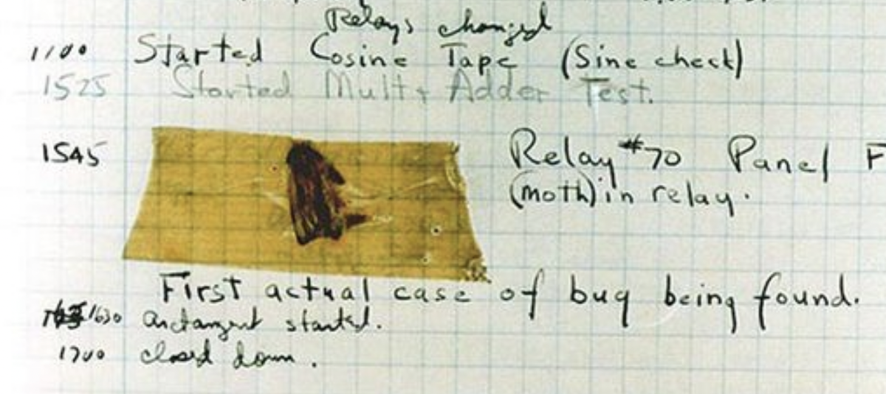 - We’ll write a new program to print three “bricks”. We’ll call it
buggy.c:#include <stdio.h> int main(void) { for (int i = 0; i <= 3; i++) { printf("#\n"); } }- This program compiles and runs, but we have a logical error since we see four bricks:
$ make buggy $ ./buggy # # # #
- This program compiles and runs, but we have a logical error since we see four bricks:
- We might see the problem already, but if we didn’t, we could add another
printftemporarily:#include <stdio.h> int main(void) { for (int i = 0; i <= 3; i++) { printf("i is %i\n", i); printf("#\n"); } }- Now, we can see that
istarted at 0 and continued until it was 3, but we should have ourforloop stop once it’s at 3, withi < 3instead ofi <= 3:$ make buggy $ ./buggy i is 0 # i is 1 # i is 2 # i is 3 #
- Now, we can see that
- In our instance of VS Code, we have another command,
debug50, to help us debug programs. This is a tool that runs the debugger built into VS Code, a program that will walk through our own programs step-by-step and let us look at variables and other information while our program is running. - First, we’ll click next to line 5 in our program to make a red dot appear:
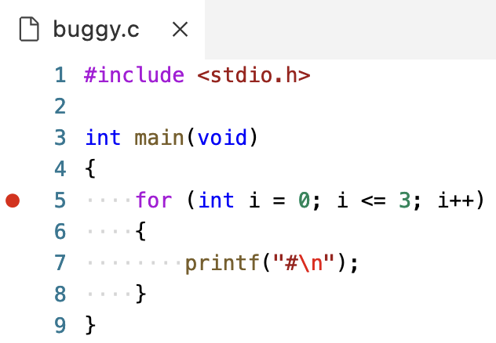 - Then, we’ll run the command
debug50 ./buggy, which might open a tab called Debug Console. We should go back to the tab labeled Terminal, so we can see our program’s output still:
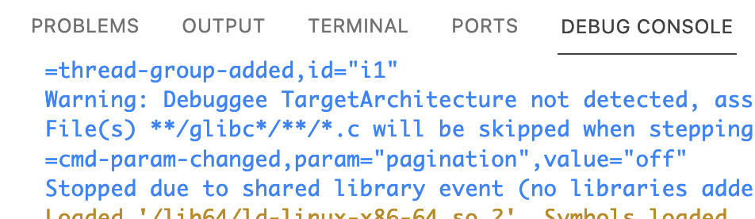 - The red dot we added was a breakpoint, a place where we want our debugger to pause our program’s execution. Line 5 is now highlighted in yellow since it hasn’t executed yet:
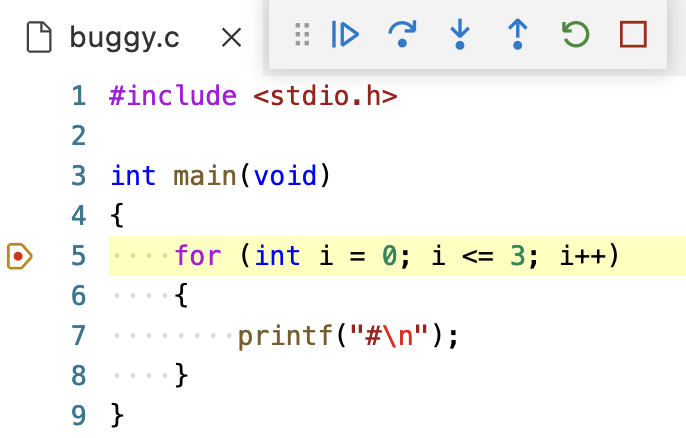 - The buttons that have appeared will allow us to control our program. We can hover over each of them to see their labels. The first button that looks like a play button will “continue” our program until the next breakpoint. The second button, which looks like a curved arrow, will “step over”, or run the next line. We’ll click that one:
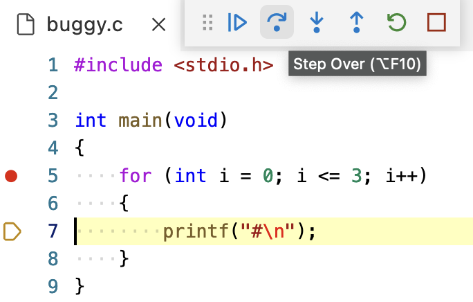 - Notice that the panel on the left labeled Run and Debug has a section called Variables, where we can see their values:
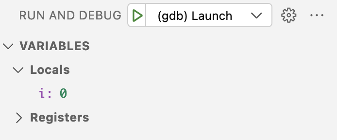ihas a value of0.
- We’ll click the Step Over button again, and now we see a single
#printed to the screen. The value ofihasn’t changed, since we’re back to line 5, but that hasn’t run yet. - Now, we can click Step Over again, and we’ll see the value of
ichange to1as we run line 5 and move to line 7. - We can repeat this at our pace, and see our program’s output and variables.
- To stop this process, we’ll click the rightmost button that looks like a square, and we’ll be brought back to our terminal. And we can click the red dot next to line 5 to remove the breakpoint as well.
- A third debugging technique is using a rubber duck, where we explain what we’re trying to do in our code to a rubber duck (or other inanimate object). By talking through our own code out loud step-by-step, we might realize our mistake.
- Let’s look at another buggy program:
#include <cs50.h> #include <stdio.h> int get_negative_int(void); int main(void) { int i = get_negative_int(); printf("%i\n", i); } int get_negative_int(void) { int n; do { n = get_int("Negative Integer: "); } while (n < 0); return n; }- We’ve implemented another function,
get_negative_int, to get a negative integer from the user. We’ll use a do while loop to ask the user for an integer, storing it inn, and returning it. - We’ll include the prototype at the top of our program for our compiler.
- We’ve implemented another function,
- But when we run our program, it keeps asking us for a negative integer:
$ make buggy $ ./buggy Negative Integer: -50 Negative Integer: -5 Negative Integer: 0 0 - We could add a line to print the value:
... int get_negative_int(void) { int n; do { n = get_int("Negative Integer: "); printf("n is %i\n", n); } while (n < 0); return n; } ...- But that doesn’t help us a lot.
- We’ll set a breakpoint on line 8,
int i = get_negative_int();, since it’s the first interesting line of code. We’ll rundebug50 ./buggy, and click the “Step Over” button to run that line:
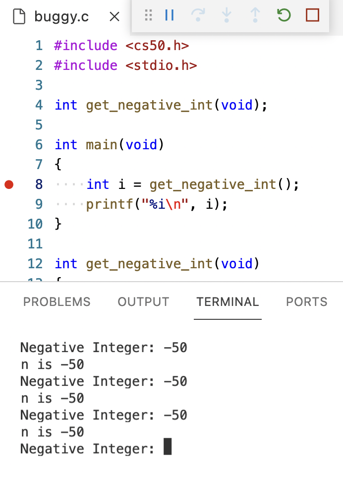- But now we are stuck in that line, and we can’t really see what it’s doing.
- We’ll stop our debugger, and start it again. This time, we’ll click the third button that looks like an arrow pointing down, “Step Into”, which will let us go into the function called on that line. Now, the line
n = get_int("Negative Integer: ");within theget_negative_intfunction is highlighted, and hopefully we can find the mistake in our code.
Memory
- In C, we have different types of variables we can use for storing data. Each variable is stored with a fixed number of bytes, and for most computer systems each type has the following size:
bool, 1 byte- A Boolean value can technically be represented with just a single bit, but for simplicity our computers use an entire byte.
char, 1 byte- Recall that with ASCII, we have a maximum of 256 different possible characters, since there are 8 bits in a byte.
double, 8 bytes- Twice as many bytes as a
float.
- Twice as many bytes as a
float, 4 bytesint, 4 bytes- Recall that a 32-bit integer can represent about 4 billion different values.
long, 8 bytes- Twice as many bytes as an
int.
- Twice as many bytes as an
string, ? bytes- A
stringtakes up a variable amount of space, since it could be short or long.
- A
- Inside our computers, we have chips called RAM, random-access memory, that stores zeroes and ones. We can think of bytes stored in RAM as though they were in a grid, one after the other:
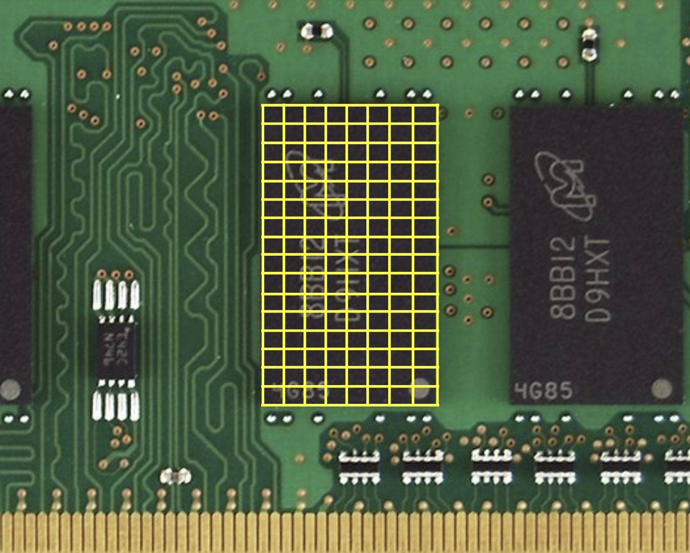- In reality, there are millions or billions of bytes per chip.
- A
charwhich takes up one byte will take up one of those squares in RAM. Anint, with 4 bytes, will take up four of those squares. - Now, we can take for granted that bytes are stored in memory, knowing that we can work with them and build abstractions on top of them.
Arrays
- Let’s say we wanted to take the average of three variables:
#include <stdio.h> int main(void) { int score1 = 72; int score2 = 73; int score3 = 33; printf("Average: %f\n", (score1 + score2 + score3) / 3); } - When we compile this program, we get:
$ make scores scores.c:9:29: error: format specifies type 'double' but the argument has type 'int' [-Werror,-Wformat] printf("Average: %f\n", (score1 + score2 + score3) / 3); ~~ ^~~~~~~~~~~~~~~~~~~~~~~~~~~~~~ %d 1 error generated. make: *** [<builtin>: scores] Error 1- It turns out that, dividing three integers by another integer will result in an integer, with the remainder getting thrown away.
- We’ll divide by not
3, but3.0so the result is treated as a float:... printf("Average: %f\n", (score1 + score2 + score3) / 3.0); ...$ make scores $ ./scores Average: 59.333333 - The design of our program isn’t ideal, since we have just three variables, and we’d have to define more and more variables.
- While our program is running, the three
intvariables are stored in memory:
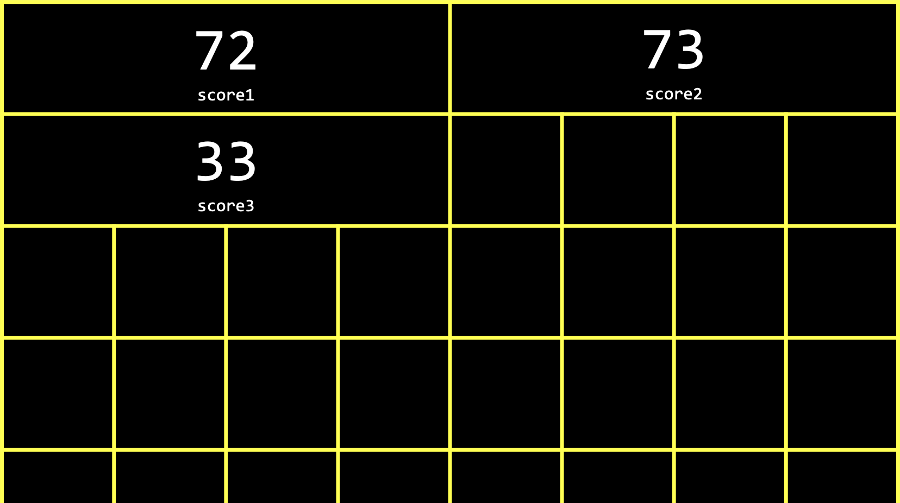 - Each
inttakes up four boxes, representing four bytes, and each byte in turn is made up of eight bits, 0s and 1s:
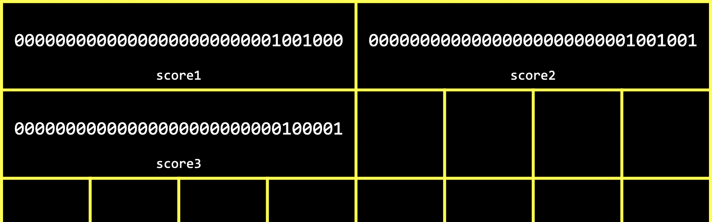 - It turns out we can refer to multiple variables with one name with another type called an array. With an array, we can store values of the same type, back-to-back, or contiguously.
- For example, in our program above, we can use
int scores[3];to declare an array of three integers instead. The square brackets,[3], indicates how many values we want to store, andintindicates the type of each value. We also name our arrayscoresto indicate that it stores multiple scores. - And we can assign and use variables in an array with
scores[0] = 72. With the brackets, we’re indexing into, or going to, the “0th” position in the array. Arrays are zero-indexed, meaning that the first value has index 0, and the second value has index 1, and so on. - Let’s update our program to use an array:
#include <cs50.h> #include <stdio.h> int main(void) { int scores[3]; scores[0] = 72; scores[1] = 73; scores[2] = 33; printf("Average: %f\n", (scores[0] + scores[1] + scores[2]) / 3.0); }- Now, we’re storing three
ints in an array, and then accessing them again later to add them together.
- Now, we’re storing three
- We’ll ask the user for each score:
#include <cs50.h> #include <stdio.h> int main(void) { int scores[3]; scores[0] = get_int("Score: "); scores[1] = get_int("Score: "); scores[2] = get_int("Score: "); printf("Average: %f\n", (scores[0] + scores[1] + scores[2]) / 3.0); } - The design of our program could be improved, since we see three lines that are very similar, giving off a “code smell” that indicates we could improve it somehow. Since we can set and access items in an array based on their position, and that position can also be the value of some variable, we can actually use a for loop:
#include <cs50.h> #include <stdio.h> int main(void) { int scores[3]; for (int i = 0; i < 3; i++) { scores[i] = get_int("Score: "); } printf("Average: %f\n", (scores[0] + scores[1] + scores[2]) / 3.0); }- Now, instead of setting each value, we use a
forloop and useias the index of each item in the array.
- Now, instead of setting each value, we use a
- And we repeated the value 3, representing the length of our array, in two different places. So we can ask the user and use a variable,
n, for the number of scores:... int n = get_int("How many scores? "); int scores[n]; for (int i = 0; i < n; i++) { scores[i] = get_int("Score: "); } ...
Characters
- We might have three characters we want to print:
#include <stdio.h> int main(void) { char c1 = 'H'; char c2 = 'I'; char c3 = '!'; printf("%c%c%c\n", c1, c2, c3); }$ make hi $ ./hi HI!- We can use
%cto print out each character.
- We can use
- Let’s see what happens if we change our program to print
cas an integer:#include <stdio.h> int main(void) { char c1 = 'H'; char c2 = 'I'; char c3 = '!'; printf("%i %i %i\n", c1, c2, c3); }$ make hi $ ./hi 72 73 33- It turns out that
printfcan printchars as integers, since each character is really stored as an ASCII value with zeroes and ones.
- It turns out that
- We can explicitly convert
chars toints as well with:printf("%i %i %i\n", (int) c1, (int) c2, (int) c3); - When we convert a
floatto anint, however, we’ll lose some information, like the values after the decimal point.
Strings
- We can see the same output as above by using a
stringvariable:#include <cs50.h> #include <stdio.h> int main(void) { string s = "HI!"; printf("%s\n", s); }$ make hi $ ./hi HI! - It turns out that strings are actually just arrays of characters, and defined not in C but by the CS50 library.
- Since our string is called
s, which is just an array, each character can be accessed withs[0],s[1], and so on:#include <cs50.h> #include <stdio.h> int main(void) { string s = "HI!"; printf("%i %i %i\n", s[0], s[1], s[2]); }$ make hi $ ./hi 72 73 33 - In memory, our three
charvariables might have been stored like this:
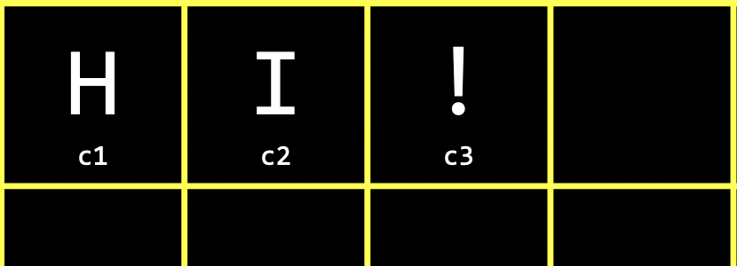 - Each character in our string is stored in a byte of memory as well:
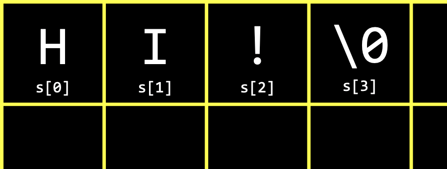 - In C, strings end with a special character,
'\0', or a byte with all eight bits set to 0, so our programs have a way of knowing where the string ends. This character is called the null character, or NUL. So, we actually need four bytes to store our string with three characters. - Other data types we’ve seen so far don’t need anything else at the end, since they are all set to a fixed size. Other languages or libraries might have custom types that represent numbers with a variable number of bytes as well, so there’s more precision, but that might ultimately be implemented with recording how many bytes each number is.
- We can even print the last byte in our string to see that its value is indeed
0:#include <cs50.h> #include <stdio.h> int main(void) { string s = "HI!"; printf("%i %i %i %i\n", s[0], s[1], s[2], s[3]); }$ make hi $ ./hi 72 73 33 0 - Let’s try taking a look at multiple strings:
#include <cs50.h> #include <stdio.h> int main(void) { string s = "HI!"; string t = "BYE!"; printf("%s\n", s); printf("%s\n", t); }$ make hi $ ./hi HI! BYE!stakes up 4 bytes, andttakes up 5.
- We can write a program to determine the length of a string:
#include <cs50.h> #include <stdio.h> int main(void) { string name = get_string("Name: "); int i = 0; while (name[i] != '\0') { i++; } printf("%i\n", i); }$ make length $ ./length Name: HI! 3 $ ./length Name: BYE! 4 $ ./length Name: David 5- We’ll get a
stringfrom the user, and use the variableito get each character in the string. If the character isn’t\0, then we know it’s a character in the string, so we incrementi. If the character is\0, then we’ve reached the end of the string and can stop the loop. Finally, we’ll print the value ofi.
- We’ll get a
- We can create a function to do this:
#include <cs50.h> #include <stdio.h> int string_length(string s); int main(void) { string name = get_string("Name: "); int length = string_length(name); printf("%i\n", length); } int string_length(string s) { int i = 0; while (s[i] != '\0') { i++; } return i; }- Our function,
string_length, will take in astringas an argument, and return anint.
- Our function,
- We can use a function that comes with C’s
stringlibrary,strlen, to get the length of the string:#include <cs50.h> #include <stdio.h> #include <string.h> int main(void) { string name = get_string("Name: "); int length = strlen(name); printf("%i\n", length); } - We can use CS50’s manual pages to find and learn about libraries and functions. Standard libraries come with older documentation, called manual pages, that aren’t always beginner-friendly. CS50’s version includes simpler documentation for common functions.
- For example, we can search for “string” and see that
strlenhas a page that includes a synopsis, or summary, description, and example. - Now that we can use
strlen, we can try to print each character of our string with a loop:#include <cs50.h> #include <stdio.h> #include <string.h> int main(void) { string s = get_string("Input: "); printf("Output: "); for (int i = 0; i < strlen(s); i++) { printf("%c", s[i]); } printf("\n"); }$ make string $ ./string Input: HI! Output: HI! $ ./string Input: BYE! Output: BYE!- We can print each character of
swiths[i], and we can use a for loop since we know the length of the string, so we know when to stop.
- We can print each character of
- We can improve the design of this program. Our loop was a little inefficient, since we check the length of the string, after each character is printed, in our condition. But since the length of the string doesn’t change, we can check the length of the string once:
#include <cs50.h> #include <stdio.h> #include <string.h> int main(void) { string s = get_string("Input: "); printf("Output: \n"); for (int i = 0, n = strlen(s); i < n; i++) { printf("%c\n", s[i]); } }- Now, at the start of our for loop, we initialize both an
iandnvariable, and remember the length of our string inn. Then, we can check the values without having to callstrlento calculate the length of the string each time. - And we did need to use a little more memory to store
n, but this saves us some time with not having to check the length of the string each time.
- Now, at the start of our for loop, we initialize both an
- We can now combine what we’ve seen, to write a program that can capitalize letters:
#include <cs50.h> #include <stdio.h> #include <string.h> int main(void) { string s = get_string("Before: "); printf("After: "); for (int i = 0, n = strlen(s); i < n; i++) { if (s[i] >= 'a' && s[i] <= 'z') { printf("%c", s[i] - 32); } else { printf("%c", s[i]); } } printf("\n"); }$ make uppercase $ ./uppercase Before: hi After: HI $ ./uppercase Before: david After: DAVID- First, we get a string
sfrom the user. Then, for each character in the string, if it’s lowercase (which means it has a value between that ofaandz, inclusive), we convert it to uppercase. Otherwise, we just print it. - We can convert a lowercase letter to its uppercase equivalent by subtracting the difference between their ASCII values, which is
32betweenaandA, andbandB, and so on.
- First, we get a string
- We can search in the manual pages for “lowercase”, and it looks like there’s another library,
ctype.h, that we can use:#include <cs50.h> #include <ctype.h> #include <stdio.h> #include <string.h> int main(void) { string s = get_string("Before: "); printf("After: "); for (int i = 0, n = strlen(s); i < n; i++) { if (islower(s[i])) { printf("%c", s[i] - 32); } else { printf("%c", s[i]); } } printf("\n"); }- Based on the manual pages,
islowerwill return a non-zero value ifc, the character passed in, is lowercase. And a non-zero value is treated astruein Boolean expressions. (0is equivalent tofalse.)
- Based on the manual pages,
- We can simplify even further, and just pass in each character to another function
toupper, since it capitalizes lowercase characters for us, and returns non-lowercase characters as they originally were:#include <cs50.h> #include <ctype.h> #include <stdio.h> #include <string.h> int main(void) { string s = get_string("Before: "); printf("After: "); for (int i = 0, n = strlen(s); i < n; i++) { printf("%c", toupper(s[i])); } printf("\n"); }
Command-line arguments
- Programs of our own can also take in command-line arguments, or inputs given to our program in the command we use to run it.
- We can change what our
mainfunction to no longer take invoid, or no arguments, and instead:#include <stdio.h> int main(int argc, string argv[]) { ... } argcandargvare two variables that ourmainfunction will now get automatically when our program is run from the command line.argcis the argument count, or number of arguments (words) typed in.argv[], argument vector (or argument list), is an array of the arguments (words) themselves, and there’s no size specified since we don’t know how big that will be ahead of time.- Let’s try to print arguments:
#include <cs50.h> #include <stdio.h> int main(int argc, string argv[]) { printf("hello, %s\n", argv[0]); }$ make argv $ ./argv David hello, ./argv- The first argument,
argv[0], is the name of our program (the first word typed, like./hello).
- The first argument,
- We’ll change our program to print the argument we want:
#include <cs50.h> #include <stdio.h> int main(int argc, string argv[]) { printf("hello, %s\n", argv[1]); }$ make argv $ ./argv hello, (null) $ ./argv David hello, David- When we run our program without a second argument, we see
(null)printed.
- When we run our program without a second argument, we see
- We should make sure that we have the right number of arguments before we try to print something that isn’t there:
#include <cs50.h> #include <stdio.h> int main(int argc, string argv[]) { if (argc == 2) { printf("hello, %s\n", argv[1]); } else { printf("hello, world\n"); } }$ make argv $ ./argv hello, world $ ./argv David hello, David $ ./argv David Malan hello, world- Now, we’ll always print something valid, though we’ll have to update our program to support more than two arguments.
- With command-line arguments, we can run our programs with input more easily and quickly.
- It turns out that our
mainfunction also returns an integer value called an exit status. By default, ourmainfunction returns0to indicate nothing went wrong, but we can write a program to return a different value:#include <cs50.h> #include <stdio.h> int main(int argc, string argv[]) { if (argc != 2) { printf("missing command-line argument\n"); return 1; } printf("hello, %s\n", argv[1]); return 0; }- A non-zero exit status indicates some error to the system that runs our program. Once we run
return 1;our program will exit early with an exit status of1. We might have seen error codes in the past when programs we used encountered errors as well. - We’ll write
return 0explicitly at the end of our program here, even though we don’t technically need to since C will automatically return0for us.
- A non-zero exit status indicates some error to the system that runs our program. Once we run
Applications
- We can consider phrases text and their level of readability, based on factors like how long and complicated the words and sentences are.
- For example, “One fish. Two fish. Red fish. Blue fish.” is said to have a reading level of before grade 1.
- “Mr. and Mrs. Dursley, of number four, Privet Drive, were proud to say that they were perfectly normal, thank you very much. They were the last people you’d expect to be involved in anything strange or mysterious, because they just didn’t hold with such nonsense…” might be measured to have a level of grade 7.
- Cryptography is the art of scrambling information to hide its contents. If we wanted to send a message to someone, we might want to encrypt, or somehow scramble that message so that it would be hard for others to read. The original message, or input to our algorithm, is called plaintext, and the encrypted message, or output, is called ciphertext. And the algorithm that does the scrambling is called a cipher. A cipher generally requires another input in addition to the plaintext. A key, like a number, is some other input that is kept secret:
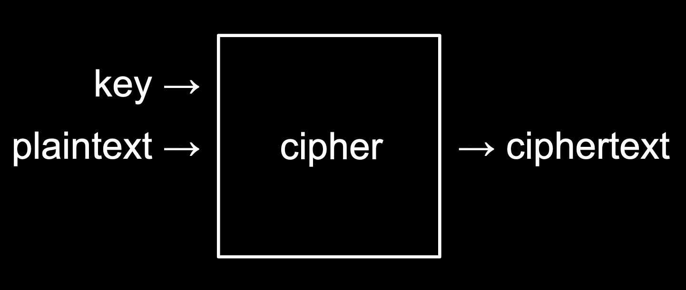 - For example, if we wanted to send a message like
HI!with a key of1, we can use a simple cipher that rotates each letter forward by 1 to getIJ!. - We could also use
-1as the key for a message ofUIJT XBT DT50to getTHIS WAS CS50as the result.